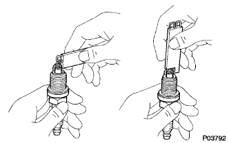
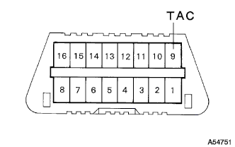

Engine inspection |
| 1. Cooling solution (Toyota genuine super LLC) inspection |
reference)| 2. Engine oil inspection |
reference)| 3. Battery inspection |
Battery compatibility inspection
| 4. Air cleaner filter element SUB-ASSY inspection |
| 5. Spark plug inspection |
| Manufacturer | Model |
|---|---|
| Made by DENSO | K16R-U11 |
| Made by NGK | BKR5EYA11 |
cleaning
 |
Use the plug cleaner to clean the spark plug.
Appearance inspection
Check the spark plug for damage to the screw and insulator.
Gap inspection / adjustment
|  |
Use the spark plug gap to measure the gap of the spark plug.
| 6. V ribd belt inspection |
 |
Tensions and quantity inspection
| When installing a new one [MM] | At the time of inspection [MM] | |
|---|---|---|
| V belt | 8.0-9.0 | 12.5-13.5 |
| P/S belt | 8-10 | 11-13 |
| When installing a new one [N {kgf}] | At the time of inspection [N {kgf}] | |
|---|---|---|
| V belt | 700-800 {71-82} | 300-400 {31-41} |
| P/S belt | 441-539 {45-55} | 245-343 {25-35} |
| 7. Identification timing inspection |
Inspection by TASCAN
Warm the engine.
Connect TASCAN to DLS3.
Operate according to the screen display, and display the [ECU data monitor] screen.
Confirm that the ignition time is within the reference value.
When the engine rotation is raised, make sure that the ignition timing is quickly progressing.
The [Active Test] screen is displayed, and after the ignition time # 1 is selected, the measurement is performed in the TC terminal ON.
Inspection by general instrument
Warm the engine.
Remove the cylinder head cover No.2.
 |
Pull out the wire harness in the figure and connect the timing light clip to the wire harness.
 |
Use the diagnodes check wire No.2 to shorten the DLC3 13 (TC) ← → 4 (CG) terminal.
Confirm that the ignition time is within the reference value.
Open between 13 (TC) ← → 4 (CG) of DLC3.
Confirm that the ignition time is within the reference value.
When the engine speed is increased, make sure that the ignition timing is quickly progressing.
| 8. Engine idol rotation inspection |
Inspection by TASCAN
Warm the engine.
Connect TASCAN to DLC3.
The operation is performed according to the screen instruction, the [ignition time inspection] screen is displayed, and the idol rotation speed is measured.
Inspection with a circular rotating meter of the primary current detection type
|  |
The octopal snack wire No.2 is attached to the 9 (TAC) terminal of DLC3, connecting the rotating meter to measure the idle rotation speed.
| 9. Compression inspection |
Warm the engine.
Remove the cylinder head cover No.2.
Take off the ignition coil.
Take off the spark plug.
Check the compression.
Attach a compression gauge to the plug hole.
Make the throttle fully open.
Crank the engine and measure the compression.
If the compression pressure is low, pour a small amount of engine oil into the cylinder and measure the compression again.
| 10. CO, HC concentration inspection |
Start the engine.
Racing for 180 seconds with 2500R/min.
Insert the tester probe into a tail pipe or more when the idle rotates.
Inspect CO and HC concentration.
If CO and HC are outside the reference value, do the procedure shown below.
Oxyzesensensen inspection
Trouble shooting with reference to the table below.
| Co | HC | defect | Estimated cause |
|---|---|---|---|
| normal | expensive | Rough idol | 1. Ignition bad
3. Inspiration and exhaust gas 4. Cylinder compression |
| low | expensive | Raffeidle (HC unstable) | 1. Removable pressure
|
| expensive | expensive | Rough idol (black smoke) | 1. Air Element, that is 2.PCV valve, that is 3.Efi system bad
|